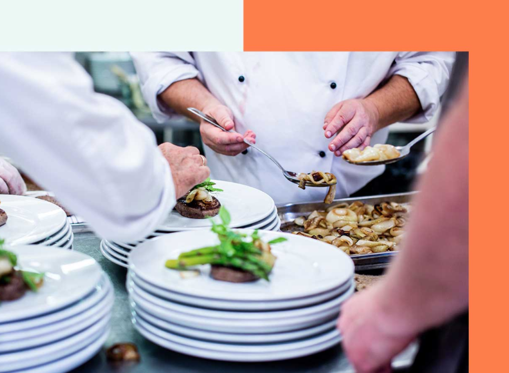

Zertifizierung.
Biolia begleitet Sie bei Ihrem nachhaltigen Zertifizierungsprojekt.

Wir coachen Sie vor und während eines grünen Zertifizierungsprozesses, von der Antragsphase bis zur Akquisitionsphase.
Wir helfen Ihnen bei der Auswahl des Labels, das zu Ihrem Unternehmen oder Produkt passt, unter den bestehenden und anerkannten Labels auf dem Markt.
Wir unterstützen Sie bei der Umsetzung der Standards und erstellen die notwendige Dokumentation.
Wir koordinieren die unabhängige Überprüfung durch Dritte und definieren die Maßnahmen zur Behebung von Nichtkonformitäten.
